Hello, I'm
Agil Herlambang
Masadi

Hello, I'm

"An Engineer who deeply passionate about environmental resilience, and on a mission to integrate advanced hydrological, hydraulic, and numerical modelling with practical engineering design to achieve sustainable development."
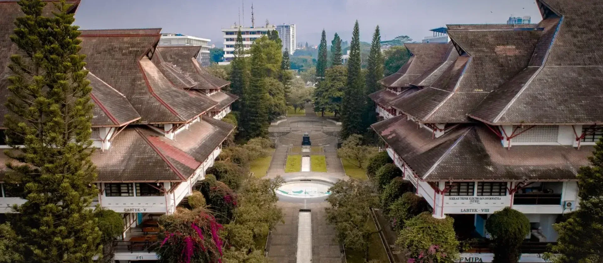

Internship / Field Study

Contract

Freelance

Contract
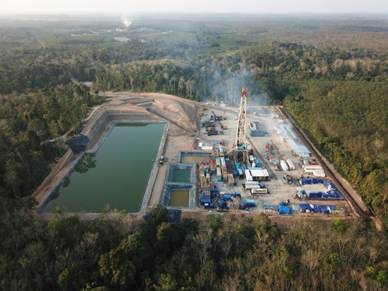
Freelance

Contract
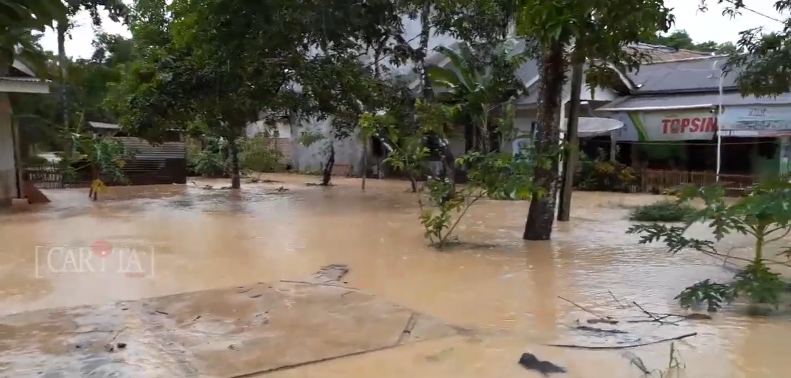
Self Employed / Freelance
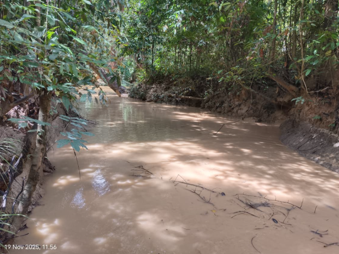
Freelance
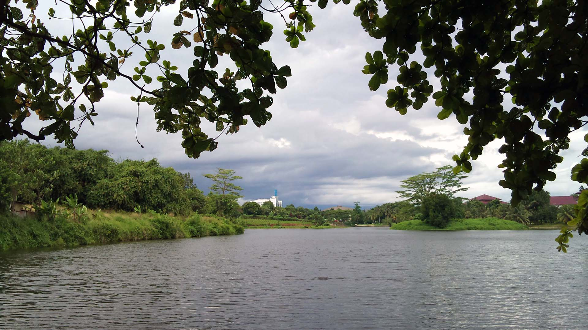
Freelance

Freelance
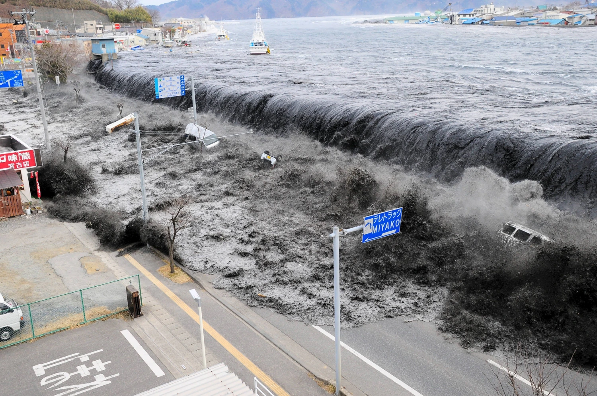
Bachelor, Final Project Research
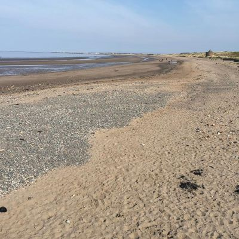
Master, Thesis Research

Theme : “Urban Resilient Against Water Disaster”
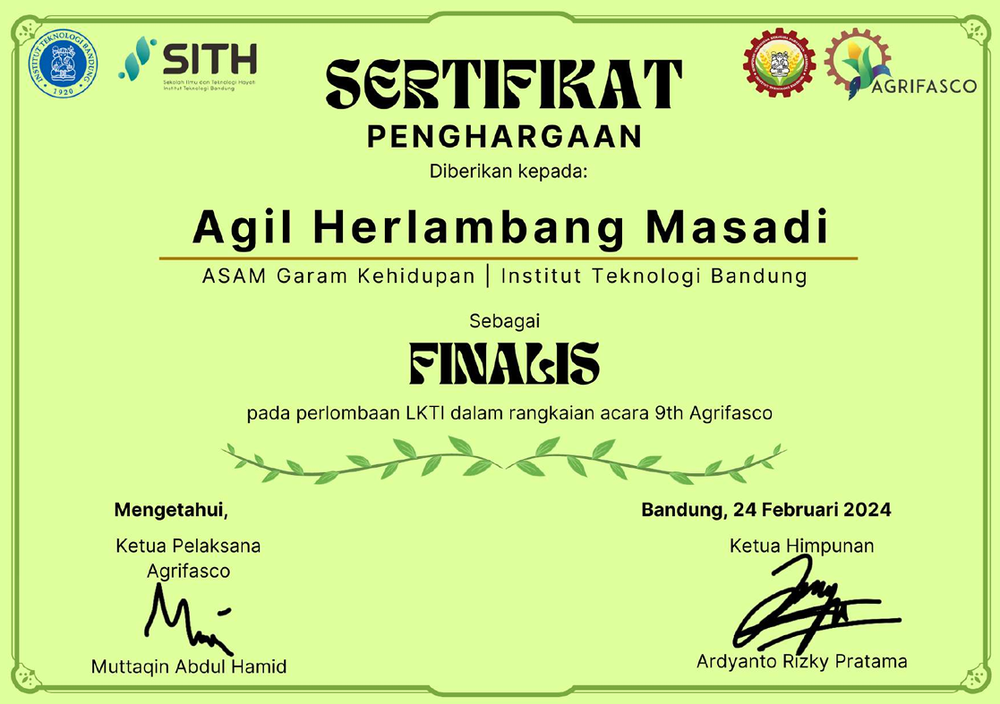
Theme : “Embracing Agricultural Transformation Towards a Sustainable Future”
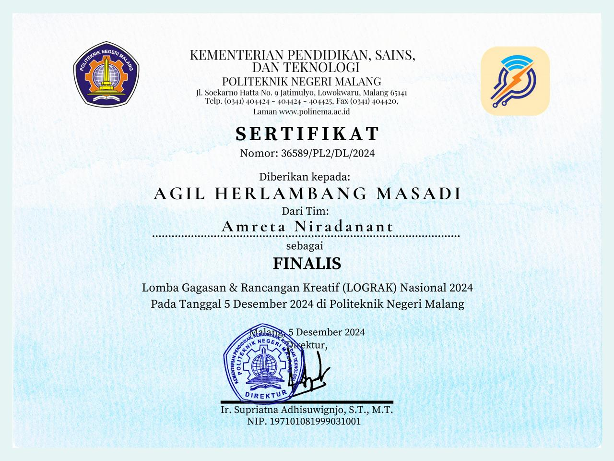
Theme : “Green Technology”

Udemy

Udemy

Sesi Minerba

Kursus Sipil

Kursus Sipil
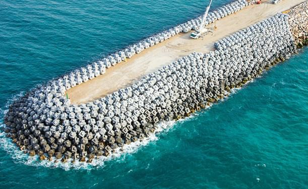
Kursus Sipil
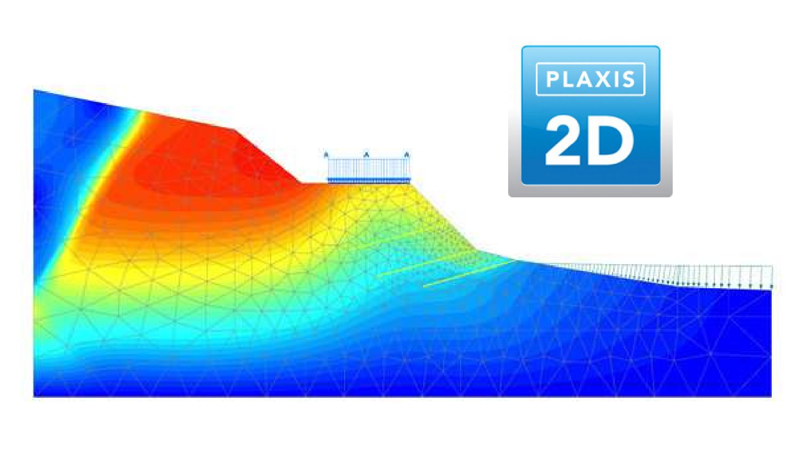
Kursus Sipil
Feel free to reach out for collaborations, project inquiries, or just to say hi.